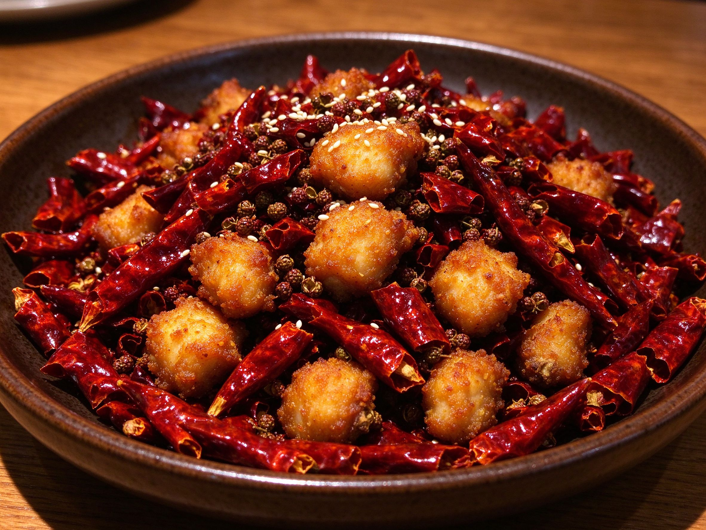

Chongqing La Zi Ji: The Addictive Sichuan Dish That's More Chili Than Chicken
It looks like a bowl of straight-up chilies with a few brave pieces of chicken buried inside — and that's exactly the point. La zi ji ("spicy chicken") is the signature dish of Chongqing, a mountain city whose cuisine fears nothing. Deep-fried chicken is tossed with a mountain of whole dried chilies and Sichuan peppercorns until crisp, numbing, and smoky. It's one of the most-requested Sichuan dishes in the West, and once you learn the rhythm, it's easier than it looks.
Why This Dish Works
The genius is a triple textural payoff: shatteringly crisp chicken, chilies that perfume rather than drench in sauce, and a slow numbing that builds as you hunt through the pile for every last piece. Unlike saucy dishes like kung pao chicken, la zi ji is a dry-fry — almost all the heat comes from crisping and from the chili-peppercorn aroma, not from a sauce.
The Ingredients
- Boneless chicken thighs — 450 g / 1 lb. Thighs stay juicy where breast dries out; cut into 2-3 cm chunks.
- Dried whole chilies — 1 to 1.5 cups. This is the whole point — be generous. Sichuan or Thai dried chilies, halved or left whole.
- Sichuan peppercorns — 2 teaspoons, for the numbing tingle.
- Cornstarch — 3-4 tablespoons, for the crisp coating.
- Egg white — 1, mixed with a splash of soy sauce, Shaoxing wine, and a pinch of salt to marinate.
- Garlic, ginger, scallions — the aromatics that bring it together.
- White sesame — to finish.
The Method
1. Marinate and coat
Toss the chicken with the egg-white mixture, then dust generously with cornstarch until each piece is dry and coated. This double layer — wet marinade, dry starch — is what creates the shatter-crisp shell. Rest it 10 minutes while you prep the chilies.
2. Fry in two stages
Heat oil to 180°C / 350°F and fry the chicken in batches until just cooked and lightly golden — about 3 minutes. Pull them out, let the oil come back to 190°C / 375°F, then fry again 60-90 seconds until deeply golden and crunchy. Double-frying is the secret; a single fry leaves a soft shell.
3. Bloom the chilies
Drain most of the oil, leaving about 2 tablespoons. Over medium-low heat, toast the dried chilies and Sichuan peppercorns until fragrant and glossy — 30-45 seconds, no more. Watch them closely; burnt chilies turn bitter fast. Add garlic and ginger and stir a few seconds.
4. Toss and finish
Return the chicken to the wok with a pinch of salt and a drizzle of sesame oil. Toss everything together so every piece picks up the chili gloss, then tip it out onto a plate, scatter scallions and sesame, and serve.
The Three Tricks That Matter
- Hunt through the pile — serve the dish as-is with chilies on top; digging for the chicken is part of the fun, and no one actually eats the chilies whole.
- Don't skip the peppercorns — the Sichuan-peppercorn numbing is what separates la zi ji from generic "hot wings."
- Bloom, don't burn — chilies should turn glossy and fragrant, never black. Lower the heat for this step.
Serving It
Pair it with steamed jasmine rice and something cooling — cucumber salad or a simple cold noodle dish. It's fantastic as the fiery centerpiece of a Sichuan spread alongside mapo tofu.
For a milder entry into Sichuan cooking, start with the same double-fry technique on sweet and sour pork, where the sauce does the work. When you're ready for real heat, come back here — and make double the chilies.